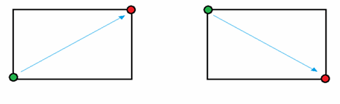
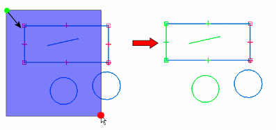
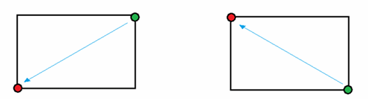
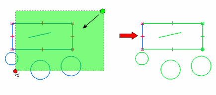

directional fence
In the Draft environment and in ordered sketching in other environments, you can use the directional fence to efficiently select geometry.
Dragging from left to right selects only geometry completely inside the fence as shown below.


Dragging from right to left selects inside and overlapping geometry within the fence as shown below.


Note:
The opacity and color of the directional fence shading settings are located on the Colors tab in the Solid Edge Options dialog box.
For more information, see Element and object selection